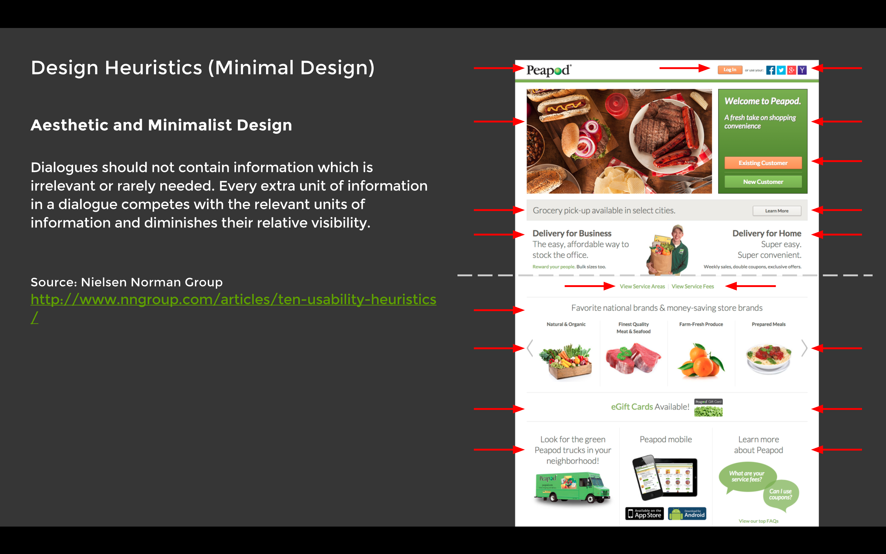
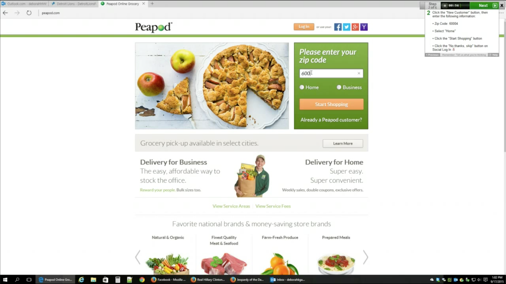
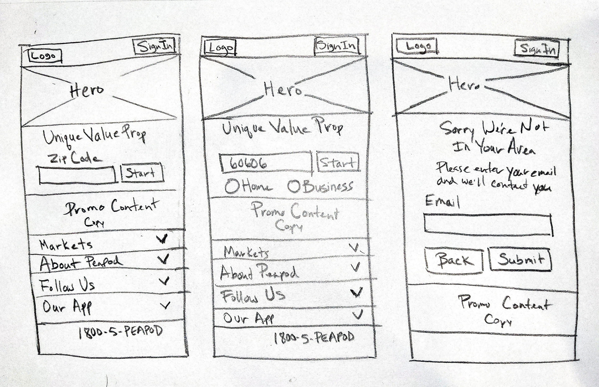
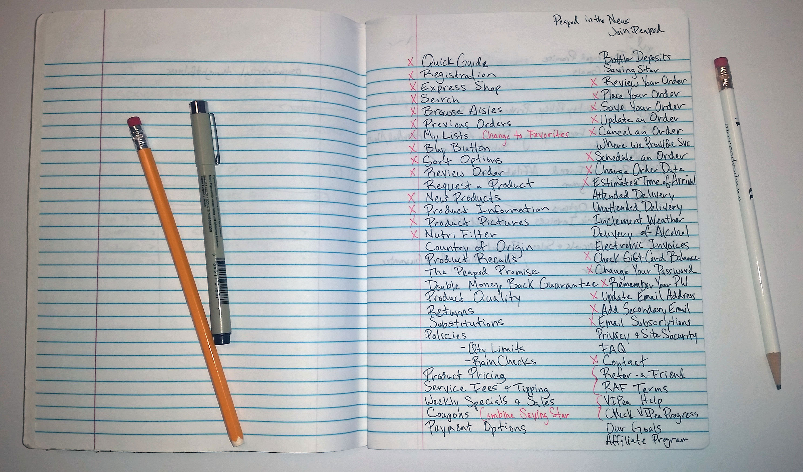
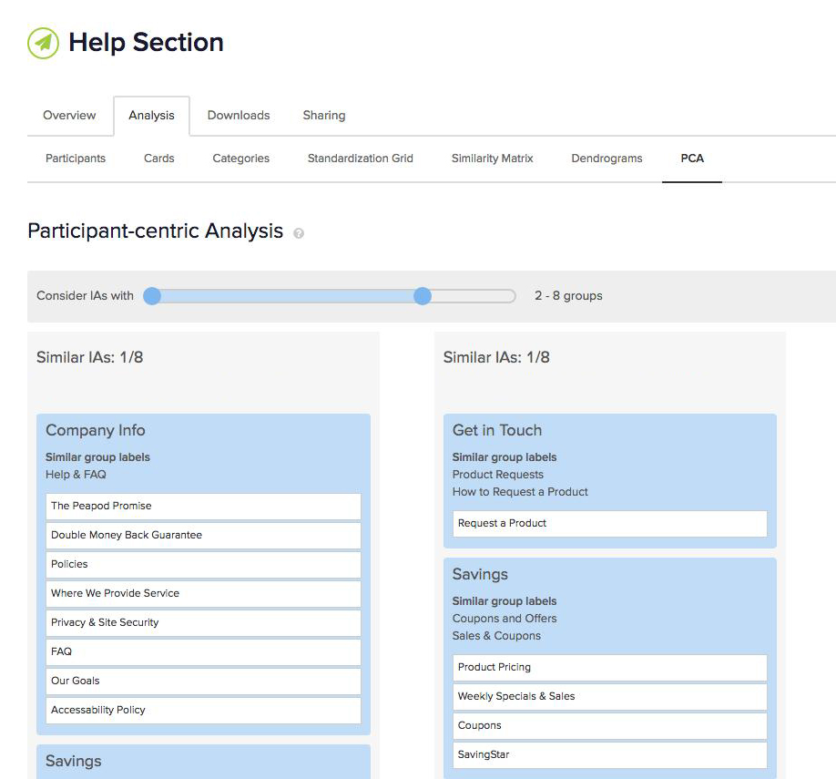
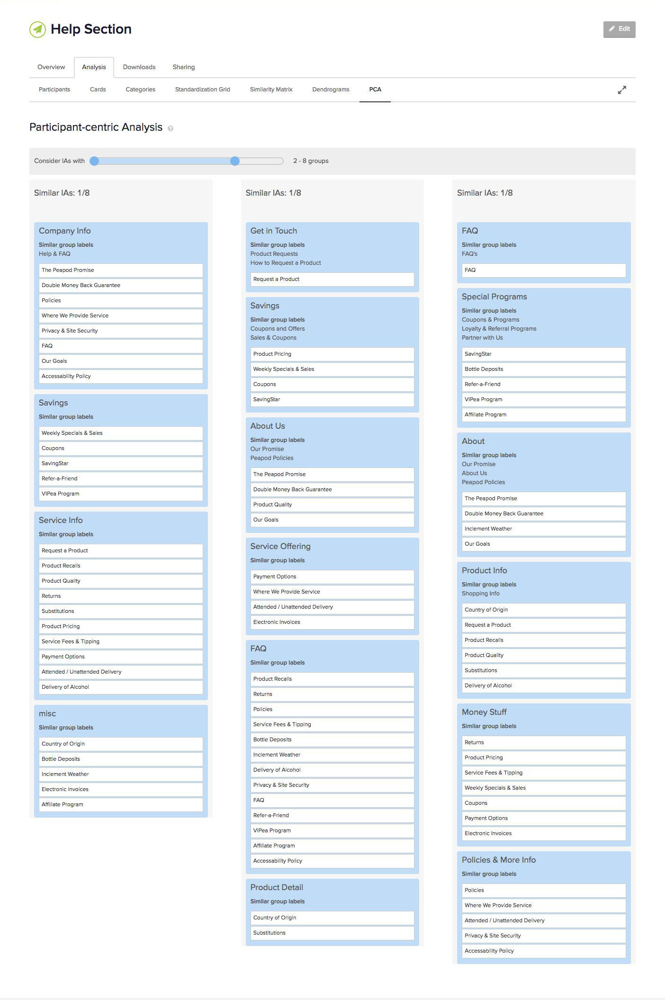
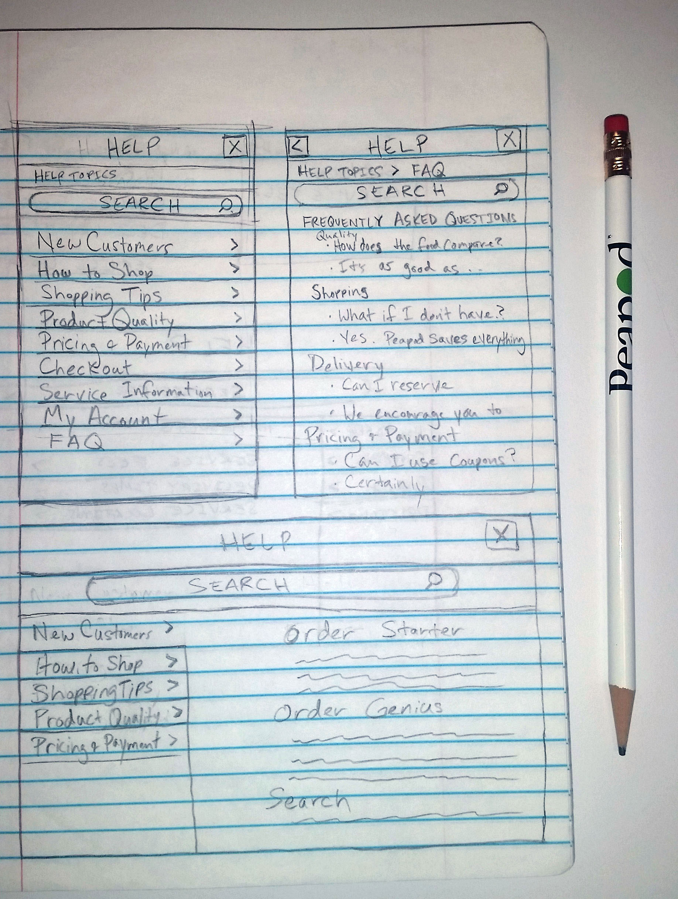
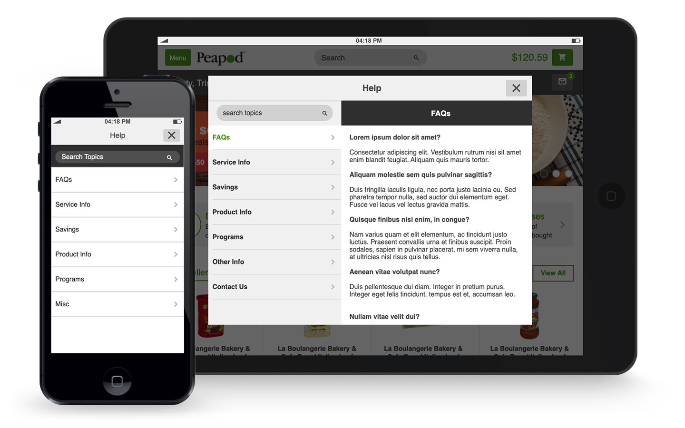

Designed order management system for print production facility.
Designed order management system for print production facility.
Order Management System (MVP)

Helped redesign world's first E-commerce experience for responsive web.
Peapod Online Grocery

Helped create interactive art installation that responds to proximity and touch.
Ice-Burg Project

Helped provide recommendations to Shedd Aquarium for improving exhibit accessibility.
Museum Exhibit Accessibility
Peapod • E-commerce • Responsive Web
Peapod, founded in 1989, was one of the first E-commerce shopping sites. Their online grocery site had not been update for many years and the time had come to upgrade and conform to modern web standards. I was part of a team of two UI/UX Designers who were tasked with modernizing the site. My job was to help improve the experience for users by redesigning various features that would streamline their shopping experience.
As part of the redesign effort I had to redesign the old gateway page into a new responsive page which allows users to easily sign in or enter their zip code to shop their specific product mix for their region. Peapod had a user base of 30,000 users and 1,700 active sessions at a given time. My job was to design a gateway page which allowed users to pass through as effortlessly as possible and to minimize bounce rate which sat at 80%.
For the redesign of this feature there were several phases. First I conducted a competitive analysis of competitors websites, researched best practices design patterns, and compared that with Peapod's existing gateway page. Next I conducted a heuristic evaluation of Peapod's existing gateway page to find usability issues which may negatively impact user behavior. Then I designed and administered a usability test on the existing gateway page to see how users think about and interact with the existing gateway page. From the leanings I gathered I was able to sketch out a rough drawing and rapidly iterate through ideas. Finally I prototyped a high fidelity interactive prototype for developers to implement.
Using Nielsen Norman Group's Ten Usability Heuristics as a guide, I evaluated the existing gateway page.
Key Findings:
Next I used Usertesting.com to run a usability test on the existing gateway page.
Key Findings:
From the leanings I gathered I was able to sketch out a rough drawing and rapidly iterate through ideas.
Finally I prototyped a high fidelity interactive prototype of a new gateway page for developers to implement.
View High-fi Interactive Prototype (Axure)

Along with the redesign of the gateway page there was a need for redoing the existing Help section which had outdated and redundant articles, lacked a clear heirachy, and did not give users the ability to search articles. This meant that users were more likely to call Customer Service instead of resolving issues on their own, because they could not easily access information.
For the Help section redesign first I conducted a competitive analysis to analyze how competitors such as Instacart & FreshDirect designed their Help sections. Next I listed out existing articles so I could consolidate redundant articles and eliminate oudated ones. I then conducted an open card sort to define categories. From there I sketched and rapidly iterated through design ideas. Finally I prototyped a high fidelity interactive prototype for develoment.
I conducted an open card sort with 13 participants using Optimal Sort. The participants were asked to group the help topics, and name their groupings.
 Next I sketched out ideas for the layout for mobile, tablet, and desktop.
Finally I prototyped mobile and tablet versions for development.
View Mobile High-fi Interactive Prototype (Axure)
View Tablet High-fi Interactive Prototype (Axure)
Please note only a subset of my work can be displayed online due to NDA's. Feel free to reach out to me regarding work opportunities. You may also find me on LinkedIn.